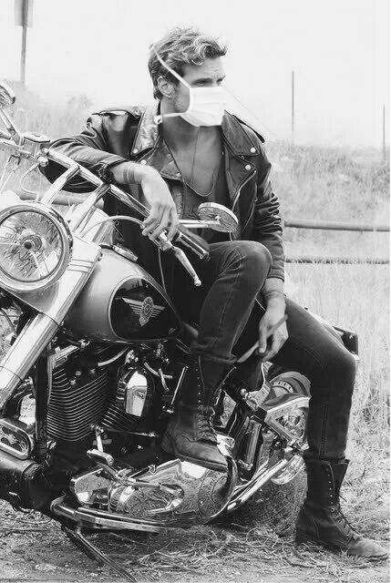

posted 4.12.07 21:52:20 bikerpsyche wrote: thought you guys might be interested in seeing my new fanvid! it's starly, i love them so much omgggggggg! I worked really hard so I hope you like it! sorry about the quality! xx
-- view comments (10) comments --
BBS Blog Post Sun 17:33:04

Mod GunNurse100 wrote:
OMG you guys what about that TEASER for NEXT SEASON????
Show quoted text: Next time on Biker Brain Surgeon... Steve is sitting with his head in his hands. "The one brain I couldn't save was my own. ... . But I came close."Flashback: he's operating on his own brain.
CAN YOU BELIEVE?? AHH I predicted this from the BEGINNING I can't wait to see how they're going to handle it!! #cantwaitforsunday #BBS #imabrainybikerbabe
-- view replies (3) replies --
4.25.07 09:39:51 Mod GunNurse100 replied: new offical art! #blessed
4.25.07 12:48:25 bbsgurl69 replied:kyaaaaaaaa! he's so hot

4.26.07 14:12:24 thebikeroath replied:look at those double scalpels!! *heart eyes*
____________________________________